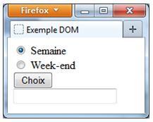
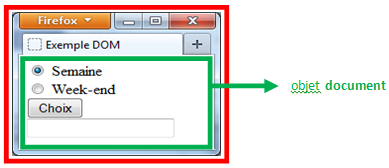
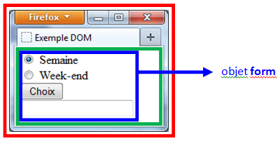
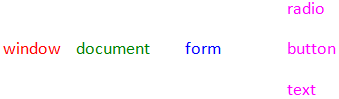
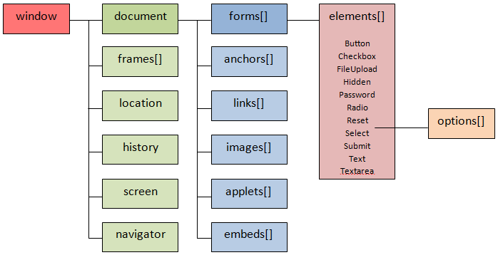

09 Le DOM et l'objet
Présentation
JavaScript est un langage basé sur les objets*.
Pour JavaScript, une page web est un « document » et chaque élément (balises et attributs HTML, mais aussi la fenêtre du navigateur) de ce document est représenté sous forme d’objet.
Cette représentation objet est appelée le Document Object Model, en abrégé DOM.
Le DOM représente l’arborescence d’une page web : une hiérarchie de nœuds (noeuds parents et enfants) qui correspondent aux différents éléments du document.
L’objet racine (le parent de tous les autres éléments) est l’objet
document.
Ensuite, presque tout est un objet, par exemple :
-
Les chaînes de caractères, nombres et booléens (valeurs primitives, mais utilisables comme objets)
-
Les fonctions
-
Les tableaux
-
Les dates
-
Le navigateur (objet
navigator) -
La fenêtre (objet
window) -
L'écran (objet
screen) -
L’URL de la page (objet
location) -
L'historique de navigation (objet
history) -
Les expressions régulières (objet
RegExp)
* pour les puristes, JavaScript n'est pas à proprement parler un langage orienté objet comme C++ ou Java. On dira plutôt que JavaScript est un langage basé sur les objets et sur le prototypage.
Les objets et leur hiérarchie
JavaScript découpe une page web en objets issus des éléments HTML, et vous permet d'accéder à ces objets, d'en récupérer des informations et de les modifier.
Voyons d'abord une illustration des différents objets qu'une page peut contenir.
Vous avez chargé la page suivante :

Cette page s'affiche dans une fenêtre : c'est l'objet
window.

Dans cette fenêtre, il y a un document HTML : il s'agit de l'objet
document.
Autrement dit, l'objet window contient l'objet
document.

Dans ce document, on trouve un formulaire HTML : c'est l'objet
HTMLFormElement, que l'on appellera simplement
form.
L'objet window contient l'objet document qui
contient un objet form.

Dans ce formulaire, on trouve plusieurs champs : boutons radio,
bouton, champ texte. Ce sont des objets distincts (input,
button, etc.).
L'objet window contient l'objet document qui
contient l'objet form qui contient à son tour des objets
input, button, etc.

La hiérarchie des objets de cet exemple est donc :

Pour accéder à un objet, on décrit en général un chemin depuis un
objet connu (souvent document) jusqu'à l’élément
souhaité.
Dans un formulaire, les champs sont accessibles via la collection
elements.
Par exemple, pour accéder au premier champ texte :
const form = document.querySelector("form");
const premierChamp = form.elements[0];Exemple : accéder aux champs d’un formulaire
Testez l'exemple ci-dessous :
<!DOCTYPE html>
<html lang="fr">
<head>
<meta charset="utf-8" />
<title>Formulaire et DOM</title>
</head>
<body>
<form id="user-form" name="user-form">
<label>
Nom :
<input type="text" name="nom" value="Mozart" />
</label>
<br />
<label>
Prénom :
<input type="text" name="prenom" value="Ella" />
</label>
<br />
<input
type="submit"
id="submit-user-form"
name="submitUserForm"
value="Connexion"
/>
</form>
<script>
const form = document.querySelector("#user-form");
console.log("La 2e zone de texte a pour nom :");
console.log(form.elements[1].name);
console.log("La 1re zone de texte a pour valeur :");
console.log(form.elements["nom"].value);
const submitBtn = document.querySelector("#submit-user-form");
console.log("Le bouton de validation a pour identifiant unique :");
console.log(submitBtn.id);
console.log("Le bouton de validation a pour valeur :");
console.log(submitBtn.value);
</script>
</body>
</html>Sélection avec querySelector
Vous pouvez aussi utiliser la méthode
querySelector. Elle retourne le premier élément HTML qui
correspond au sélecteur CSS donné.
Par exemple, pour récupérer le premier élément qui porte la classe
.example :
const elt1 = document.querySelector(".example");Pour récupérer l’élément <body> :
const content = document.querySelector("body");
La méthode querySelector utilise la même syntaxe que le
CSS pour sélectionner les éléments HTML. Pour récupérer plusieurs
éléments, on utilise querySelectorAll qui retourne une
liste (NodeList).
Les propriétés des objets
Une propriété décrit une caractéristique d'un objet : une couleur, une taille, un texte, un état, etc.
L'objet « volant » d'une voiture pourrait par exemple avoir une propriété matière (bois, cuir…).
L'objet « livre » pourrait avoir des propriétés comme l’auteur, l’éditeur, le titre, l’ISBN, etc.
De la même façon, les objets JavaScript ont des propriétés. Pour un
bouton radio, une des propriétés importantes est
checked, qui indique s’il est sélectionné ou non.
En JavaScript, on accède aux propriétés avec la syntaxe
objet.propriete.
nomObjet.nomPropriete
Dans le cas du bouton radio « semaine », pour tester la propriété de sélection, on écrira par exemple :
const semaineRadio = document.querySelector('input[name="btnRadChoix"][value="semaine"]');
console.log(semaineRadio.checked);La propriété innerHTML
La propriété innerHTML permet de récupérer ou modifier le
contenu HTML d’un élément.
Par exemple, pour modifier le contenu d’une balise
<div> :
<div id="message">
<p>Je suis un paragraphe dans une div.</p>
</div>
<script>
const div = document.querySelector("#message");
div.innerHTML = "<h3>Nouveau titre</h3><p>Nouveau contenu.</p>";
</script>La propriété value
La propriété value permet de récupérer ou modifier le
contenu d'un champ de formulaire (input, textarea, select…).
<input type="text" id="txtBox" />
<script>
const input = document.querySelector("#txtBox");
input.value = 53; // on change la valeur du champ texte
</script>Le DOM
Le DOM (Document Object Model) est le modèle standard utilisé par les navigateurs pour représenter et manipuler les documents HTML.
Les navigateurs offrent un ensemble de méthodes pour permettre à JavaScript d'accéder aux éléments du DOM. JavaScript sert d'interface vers les objets internes du navigateur.
Le modèle objet du navigateur

-
anchors: tableau des ancres (balises<a>avec un attributname) -
links: tableau des liens (balises<a>et<area>qui ont un attributhref) -
embeds: tableau des objets multimédia (balises<embed>)
Exemple : boutons radio et DOM
Testez l'exemple ci-dessous :
<!DOCTYPE html>
<html lang="fr">
<head>
<meta charset="utf-8" />
<title>Exemple DOM</title>
</head>
<body>
<form name="frmChoix">
<label>
<input
type="radio"
name="btnRadChoix"
value="semaine"
checked
/>
Semaine
</label>
<br />
<label>
<input
type="radio"
name="btnRadChoix"
value="week-end"
/>
Week-end
</label>
<br />
<button type="button" id="btn-choix">Choix</button>
<br />
<input
id="txtBox1"
type="text"
name="txtChoix"
value=""
/>
</form>
<script>
const button = document.querySelector("#btn-choix");
const output = document.querySelector("#txtBox1");
button.addEventListener("click", () => {
const radios = document.querySelectorAll('input[name="btnRadChoix"]');
for (const radio of radios) {
if (radio.checked) {
output.value = radio.value;
}
}
});
</script>
</body>
</html>L'objet window
L'objet window représente la fenêtre (ou l’onglet) du
navigateur. Dans un script exécuté dans une page, l’objet global
window est implicite : alert("Salut") est
équivalent à window.alert("Salut").
Ouvrir une nouvelle fenêtre avec window.open
On peut ouvrir une nouvelle fenêtre (ou un nouvel onglet) avec la
méthode
window.open() :
const maFenetre = window.open("https://example.com", "maFenetre");Historiquement, on pouvait passer un troisième paramètre pour suggérer des caractéristiques d’affichage de la nouvelle fenêtre :
const maFenetre = window.open(
"https://example.com",
"maFenetre",
"toolbar=no,location=no,scrollbars=yes,resizable=yes,width=800,height=600"
);Les navigateurs modernes ignorent souvent une grande partie de ces options pour des raisons de sécurité et d’ergonomie. Il faut donc les considérer comme indicatives et non garanties.
| Caractéristique (chaîne) | Description (historique) |
|---|---|
toolbar=yes|no |
Affichage de la barre d'outils du navigateur. |
location=yes|no |
Affichage du champ d'adresse (barre d’URL). |
directories=yes|no |
Affichage de certains boutons d'accès rapide (obsolète). |
status=yes|no |
Affichage de la barre d'état (souvent ignoré). |
menubar=yes|no |
Affichage de la barre de menus. |
scrollbars=yes|no |
Affichage des barres de défilement. |
resizable=yes|no |
Autorise ou non le redimensionnement de la fenêtre. |
width=x (pixels) |
Largeur de la fenêtre demandée. |
height=y (pixels) |
Hauteur de la fenêtre demandée. |
Remarque : ces paramètres sont options, pas des garanties. Pour les interfaces modernes, on privilégie des pages responsives plutôt que la multiplication de fenêtres.
On peut fermer une fenêtre ouverte par script avec la méthode
close() :
maFenetre.close();
Quelques propriétés et méthodes de window
Voici une sélection de propriétés et méthodes de l’objet
window qu’il est utile de connaître. Certaines autres
existent mais sont obsolètes ou très peu utilisées.
| Propriété / Méthode | Description |
|---|---|
closed |
Propriété booléenne indiquant si la fenêtre (ouverte par script) est fermée. |
opener |
Référence à la fenêtre qui a ouvert la fenêtre courante (le « parent »). |
self |
Référence à la fenêtre courante (équivalent de
window).
|
top |
Référence à la fenêtre au sommet de la hiérarchie (utile avec les iframes). |
alert(message) |
Affiche une boîte de dialogue d’alerte. |
confirm(message) |
Affiche une boîte de confirmation (OK / Annuler) et retourne
true ou false.
|
prompt(message[, defaut]) |
Affiche une boîte de saisie et retourne la chaîne saisie, ou
null si l’utilisateur annule.
|
print() |
Lance l’impression de la page en cours. |
focus() |
Demande au navigateur de donner le focus à la fenêtre courante. |
blur() |
Retire le focus de la fenêtre courante. |
moveTo(x, y) |
Tente de déplacer la fenêtre à la position (x, y).
Souvent restreint ou ignoré pour des raisons de sécurité. |
resizeTo(x, y) |
Tente de redimensionner la fenêtre.
Souvent restreint ou ignoré. |
scrollTo(x, y) |
Fait défiler le contenu de la page jusqu’à la position (x, y). |
setTimeout(fonction, délai) |
Appelle une fonction après un délai (en millisecondes). |
clearTimeout(id) |
Annule un temporisateur créé par setTimeout. |
Une minuterie
L'objet window possède la méthode
setTimeout qui permet de déclencher une fonction après un
certain délai.
Exemple :
function demarrer() {
console.log("Cinq secondes se sont écoulées.");
}
const idCompteur = setTimeout(demarrer, 5000); // 5000 ms = 5 secondes
// Si besoin, on peut annuler avant la fin :
clearTimeout(idCompteur);
Dans le code moderne, on passe une fonction (ou une fonction fléchée)
à setTimeout, plutôt qu’une chaîne de caractères.
L'objet navigator
L'objet navigator donne des informations sur le
navigateur (ou « user agent ») : nom, version, système, etc.
Ces informations sont surtout utiles pour de la détection de plateforme ou pour des statistiques, mais il est déconseillé de construire toute la logique de votre application uniquement sur l’identification du navigateur.
| Propriété | Description |
|---|---|
appCodeName |
Nom de code du navigateur. |
appName |
Nom (marque) du navigateur. |
appVersion |
Informations sur la version, le système d’exploitation, etc. |
userAgent |
Chaîne complète envoyée dans l’en-tête HTTP
User-Agent.
|
Exemple d’affichage d’informations dans la console :
console.log("Code name :", navigator.appCodeName);
console.log("Nom du navigateur :", navigator.appName);
console.log("Version / OS :", navigator.appVersion);
console.log("User-Agent :", navigator.userAgent);Exemple (simplifié) pour tester si la chaîne contient « Win » (Windows) :
if (navigator.appVersion.includes("Win")) {
console.log("Vous semblez utiliser Windows.");
}En pratique, on préfère aujourd’hui la « détection de fonctionnalités » (feature detection) plutôt que la détection du navigateur.
L'objet location
L'objet location fournit des informations sur l’URL de la
page en cours de visualisation et permet de changer de page.
| Propriété / Méthode | Description |
|---|---|
href |
URL complète de la page. |
hostname |
Nom d’hôte (ex : www.example.com). |
pathname |
Chemin de la ressource (ex : /cours/dom.html).
|
protocol |
Protocole (ex : https:). |
reload() |
Recharge la page courante. |
replace(url) |
Remplace la page actuelle par une nouvelle, sans l’ajouter dans l’historique. |
Exemples :
console.log(location.href);
console.log(location.hostname);
console.log(location.pathname);
// Recharger la page
// location.reload();
// Aller vers une autre page
// location.href = "https://www.example.com";L'objet history
L'objet history permet de manipuler l’historique des
pages visitées dans l’onglet courant.
| Méthode | Description |
|---|---|
back() |
Charge la page précédente (équivalent du bouton « Retour »). |
forward() |
Charge la page suivante (équivalent du bouton « Suivant »). |
go(x) |
Va à la page située à l’index x par rapport à la
page actuelle (-1 = page précédente,
1 = page suivante…).
|
// history.back();
// history.forward();
// history.go(-1); // équivaut à history.back();L'objet screen
L'objet screen fournit des informations sur l'écran de
l’utilisateur (taille, profondeur de couleur, etc.).
Quelques propriétés utiles :
width: largeur totale de l’écran.height: hauteur totale de l’écran.-
availWidth: largeur disponible (hors barres système). -
availHeight: hauteur disponible (hors barres système). colorDepth: profondeur de couleur (en bits).
console.log("Largeur écran :", screen.width);
console.log("Hauteur écran :", screen.height);
console.log("Largeur disponible :", screen.availWidth);
console.log("Hauteur disponible :", screen.availHeight);
console.log("Profondeur de couleur :", screen.colorDepth);